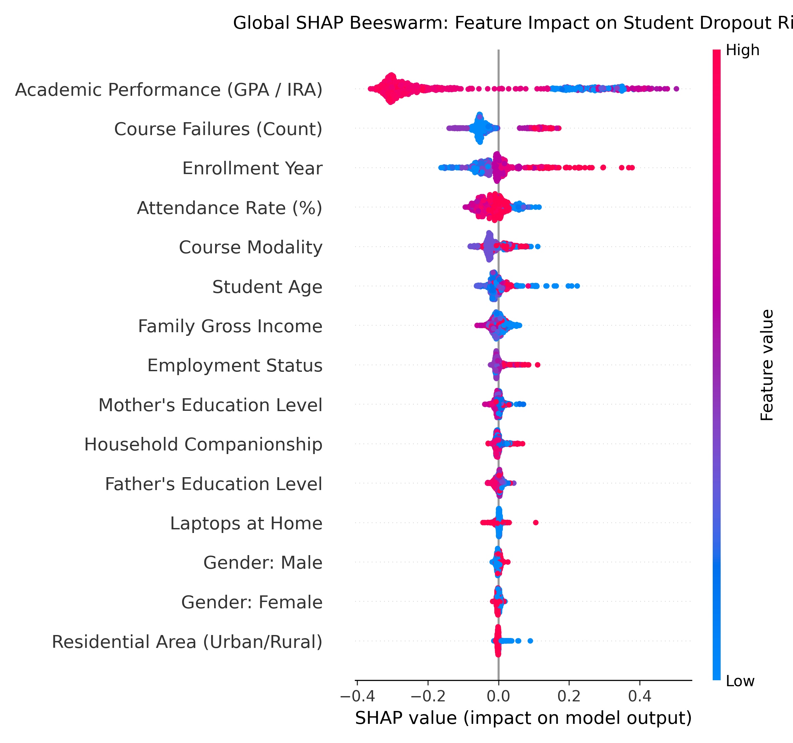
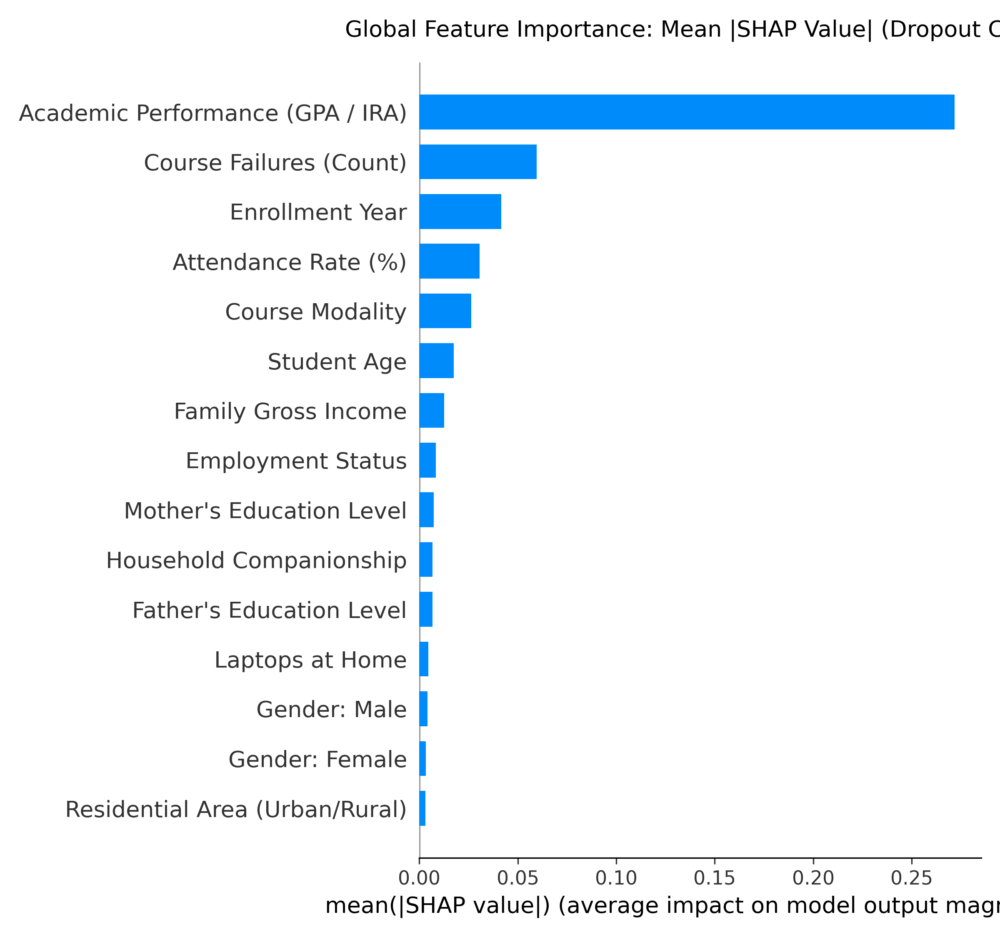
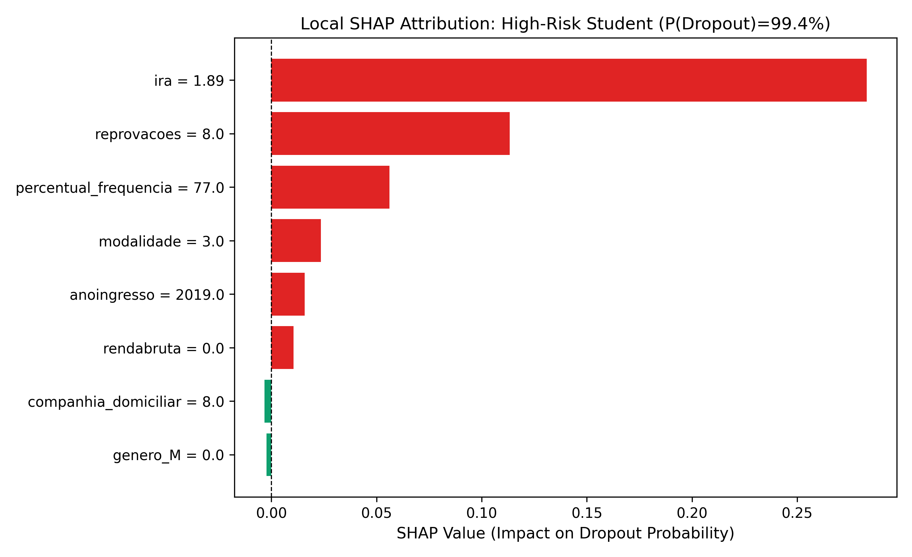
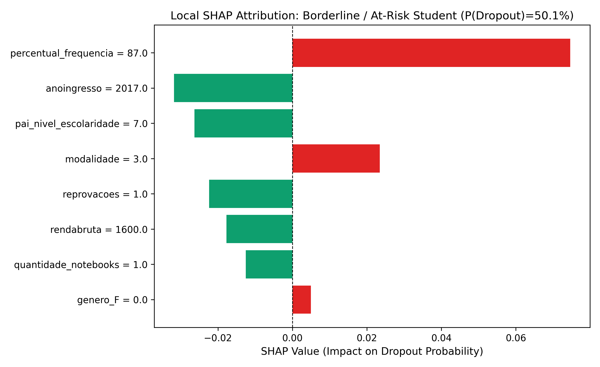
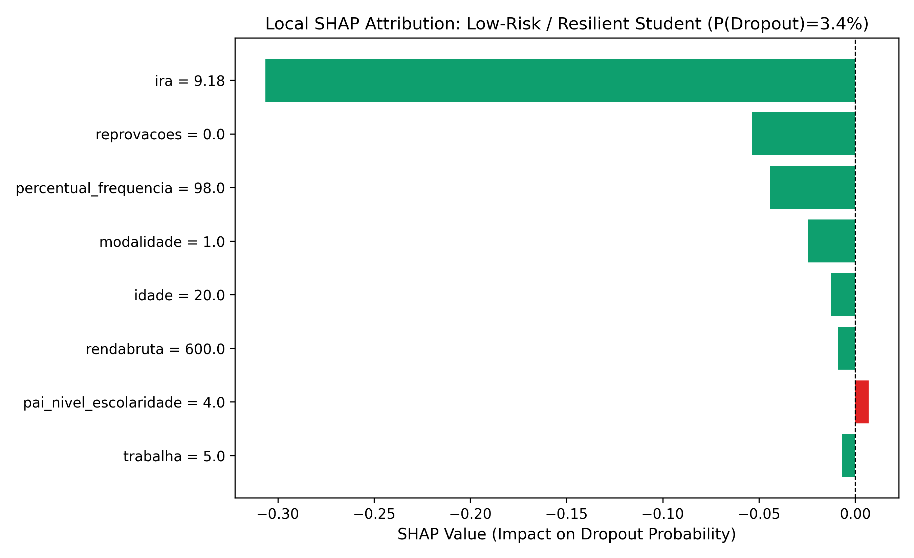

Empirical feature attribution and personalized counseling intervention engine based on SHAP (TreeExplainer) and LIME applied to the champion Random Forest model.
ira)reprovacoes)
SHAP Beeswarm Plot: Each point is a student. Red = high feature value, Blue = low value. Low IRA (blue) strongly pulls predictions toward dropout (+SHAP).

Mean Absolute SHAP Bar Plot: Quantifies the absolute average impact on dropout probability across all features.
| Rank | Feature Name | Mean |SHAP Value| | Relative Weight |
|---|---|---|---|
| #1 | ira |
0.2717 | |
| #2 | reprovacoes |
0.0596 | |
| #3 | anoingresso |
0.0415 | |
| #4 | percentual_frequencia |
0.0305 | |
| #5 | modalidade |
0.0263 | |
| #6 | idade |
0.0174 | |
| #7 | rendabruta |
0.0127 | |
| #8 | trabalha |
0.0084 | |
| #9 | mae_nivel_escolaridade |
0.0073 | |
| #10 | companhia_domiciliar |
0.0067 |
Detailed audit of three archetypal student profiles demonstrating the transition from predictive risk scores to actionable institutional guidance.
Ground Truth: Dropped Out | Model Decision: Dropped Out

ira = 1.89 (+0.2831)reprovacoes = 8.0 (+0.1134)percentual_frequencia = 77.0 (+0.0562)modalidade = 3.0 (+0.0235)Ground Truth: Completed | Model Decision: Dropped Out

percentual_frequencia = 87.0 (+0.0746)modalidade = 3.0 (+0.0235)anoingresso = 2017.0 (-0.0318)pai_nivel_escolaridade = 7.0 (-0.0263)reprovacoes = 1.0 (-0.0224)rendabruta = 1600.0 (-0.0177)Ground Truth: Completed | Model Decision: Completed

pai_nivel_escolaridade = 4.0 (+0.0070)ira = 9.18 (-0.3065)reprovacoes = 0.0 (-0.0537)percentual_frequencia = 98.0 (-0.0443)modalidade = 1.0 (-0.0244)